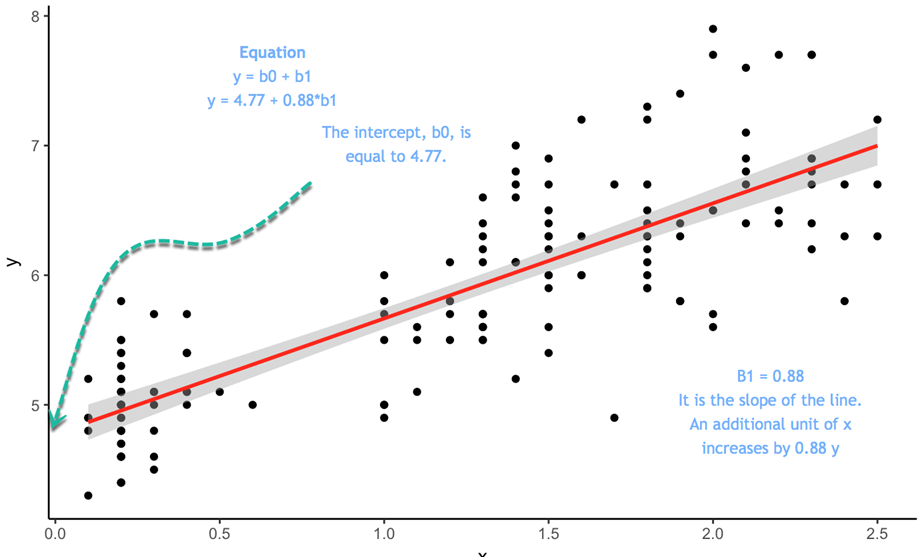

단순, 다중 선형 그리고 단계별 회귀분석 (예제 포함)
In this tutorial, you will learn
- Simple Linear regression
- Multiple Linear regression
- Continuous variables
- Factors regression
- Stepwise regression
- Machine learning
- Supervised learning
- Unsupervised learning
이 튜토리얼에서 다음에 대하여 학습한다.
단순, 다중 선형 그리고 단계별 회귀분석 (예제 포함)단순 선형 회귀분석산포도최소자승 추정다중 회귀분석연속 변수factor 회귀분석단계 회귀분석Stepwise regressionMachine learningSupervised learningUnsupervised learningSummary
단순 선형 회귀분석
Linear regression answers a simple question: Can you measure an exact relationship between one target variables and a set of predictors?
The simplest of probabilistic models is the straight line model:
선형 회귀분석은 단순한 질문에 답한다: 당신은 하나의 목표 변수와 예측 변수들 사이의 정확한 관계를 측정할 수 있는가?
확률론적 모델 중 가장 간단한 것은 선형 모델이다 :

where
- y = 종속 변수
- x = 독립 변수
 = 랜덤 에러
= 랜덤 에러 = 절편
= 절편 = x의 계수
= x의 계수
다음의 그래프를 보자 :

등식은  는 절편이다.
는 절편이다.
y = 4.77 + 0.88 * b1 이라는 등식이 있다고 하자. 이때 x가 0인 경우, y의 절편은 4.77이 되고, 0.88은 선의 기울기가 된다. 그것은 x가 변할 때 y가 따라서 변하는 비율을 의미한다.
와 의 최적 값을 추정하려면 OLS(Ordinary Least Squares, 최소자승법)라는 방법을 사용한다. 이 방법은 예측된 y 값과 실제 y 값 사이의 수직 거리인 오차의 제곱 합을 최소화하는 매개변수를 찾으려고 한다. 그 차이는 오차항(error term)이라고 알려져 있다.
모형을 추정하기 전에 산포도를 그려 y와 x 사이의 선형 관계가 타당한지 여부를 확인할 수 있다.
산포도
간단한 선형 회귀분석의 개념을 설명하기 위해 매우 간단한 데이터 세트를 사용할 것이다. 우리는 미국 여성들의 평균 키와 몸무게를 불러올 것이다. 데이터 세트에는 15개의 관측치가 포함되어 있다. 키가 몸무게가 정의 상관관계를 가지고 있는 측정하고자 한다.
xxxxxxxxxxlibrary(ggplot2)path <- 'https://raw.githubusercontent.com/guru99-edu/R-Programming/master/women.csv'df <-read.csv(path)ggplot(df,aes(x=height, y = weight))+geom_point()
결과 :
이 산점도는 x가 증가할수록 y가 증가하는 일반적인 경향을 보여준다. 다음 단계에서는 각 추가 항목에 대해 얼마나 증가하는지 측정할 것이다.
최소자승 추정
간단한 OLS 회귀 분석에서]  와 의 계산은 간단하다. 이 튜토리얼에서의 목표는 그 도출과정을 보여주는 것이 아니다. 단지 공식만을 사용하기로 한다.
와 의 계산은 간단하다. 이 튜토리얼에서의 목표는 그 도출과정을 보여주는 것이 아니다. 단지 공식만을 사용하기로 한다.
추정할 항목:
OLS 회귀분석의 목표는 다음 방정식을 최소화하는 것이다.

여기에서,
 는 실제값이고,
는 실제값이고,  는 예측값이다.
는 예측값이다.
의 해는  이다.
이다.
(주의 :  는 x의 평균값을 의미한다.)
는 x의 평균값을 의미한다.)
 의 해는
의 해는  =
=  이다.
이다.
R에서 은 cov()와 var() 함수를 사용하여 추정할 수 있으며, 는 mean() 함수를 사용하여 추정할 수 있다.
xxxxxxxxxx# Estimation of beta1beta1 <- cov(df$height, df$weight) / var (df$height)beta
결과 :
xxxxxxxxxx##[1] 3.45
xxxxxxxxxx# Estimation of beta0beta0 <- mean(df$weight) - beta * mean(df$height)beta0결과 :
xxxxxxxxxx## [1] -87.51667
beta0 는 각각의 추가적인 키(height)에 대해 몸무게(weight)가 3.45 증가한다는 것을 의미한다.
간단한 선형 방정식을 수작업으로 추정하는 것은 이상적이지 않다. R은 이러한 매개변수를 추정하기 위한 적절한 함수를 제공한다. 당신은 곧 이 함수를 보게 될 것이다. 그 전에 간단한 선형 회귀 모형을 손으로 계산하는 방법을 소개하겠다. 데이터 과학자의 여정에서 당신은 단순한 선형 모델은 거의 또는 전혀 추정하지 않을 것이다. 대부분의 경우, 회귀분석 작업은 많은 추정치들을 대상으로 수행된다.
다중 회귀분석
회귀 분석의 보다 실용적인 적용은 단순한 선형 모델보다 더 복잡한 모델을 채택한다. 두 개 이상의 독립 변수를 포함하는 확률적 모델을 다중 회귀 모형(multiple regresssion model)이라고 한다. 이 모델의 일반적인 형태는 다음과 같다 :

행렬로 표현하면, 이 모델을 다음과 같이 표현할 수 있다 :

종속 변수 y는 이제 k개의 독립 변수  의 함수다.
의 함수다.  계수는 독립 변수 와 의 기여도를 결정한다.
계수는 독립 변수 와 의 기여도를 결정한다.
OLS의 랜덤 에러에 대해 다음과 같이 가정한다.
- 평균이 0이다.
- 분산은
 이다.
이다. - 정규 분포를 갖는다.
- 렌덤 오류는 (확률적으로) 독립적이다.
y의 예측 값과 실제 값 사이의 제곱 오차 합을 최소화하는 회귀 계수의 벡터 의 해를 구해야 한다.
의 해를 구해야 한다.
그 해는 다음과 같다 :

with:
 는 행렬 x의 전치행렬(transpose)이다.
는 행렬 x의 전치행렬(transpose)이다. 는 가역행렬(invertible matrix)이다.
는 가역행렬(invertible matrix)이다.
We use the mtcars dataset. You are already familiar with the dataset. Our goal is to predict the mile per gallon over a set of features.
우리는 mtcar 데이터 세트를 사용한다. 여러분은 이미 이 데이터 집합에 대해 잘 알고 있다. 우리의 목표는 일련의 변수들에 대해 갤런 당 마일(mpg)을 예측하는 것이다.
연속 변수
현재로서는 연속 변수만 사용하고 범주형 변수는 잠시 잊기로 하자. 변수 am은 변속기가 수동일 경우 1의 값을, 자동의 경우 0의 값을 갖는 2진 변수이며, vs 변수 또한 2진 변수이다.
xxxxxxxxxx# Continuous variableslibrary(dplyr)df <- mtcars %>%select(-c(am, vs, cyl, gear, carb))glimpse(df)
결과 :
xxxxxxxxxx## Observations: 32## Variables: 6## $ mpg <dbl> 21.0, 21.0, 22.8, 21.4, 18.7, 18.1, 14.3, 24.4, 22.8, 19....## $ disp <dbl> 160.0, 160.0, 108.0, 258.0, 360.0, 225.0, 360.0, 146.7, 1...## $ hp <dbl> 110, 110, 93, 110, 175, 105, 245, 62, 95, 123, 123, 180, ...## $ drat <dbl> 3.90, 3.90, 3.85, 3.08, 3.15, 2.76, 3.21, 3.69, 3.92, 3.9...## $ wt <dbl> 2.620, 2.875, 2.320, 3.215, 3.440, 3.460, 3.570, 3.190, 3...## $ qsec <dbl> 16.46, 17.02, 18.61, 19.44, 17.02, 20.22, 15.84, 20.00, 2...
lm() 함수를 사용하여 파라미터를 계산할 수 있다. 이 함수의 기본 구문은 다음과 같다 :
xxxxxxxxxxlm(formula, data, subset)
인수 :
- formula : 추정하고자 하는 등식
- data : 사용하는 데이터 세트
- subset : 데이터 세트의 부분집합에 대한 모델 추정
등식의 다음의 형태라는 것을 기억하라 :

R에서는
=기호는~로 대체된다.- 각각의 x는 변수명으로 대체된다.
- 상수를 없애고 싶으면, 공식의 끝에 -1을 추가한다.
예제 :
키(height)와 수입(revenue)에 따른 몸무게를 추정하고자 한다. 등식은 다음과 같다 :

위의 등식을 R로 표현하면 다음과 같다 :
y ~ X1 + X2 + ... + Xn # With intercept
따라서 예제는 다음과 같이 표현된다 :
- weigh ~ height + revenue
우리의 목표가 변수들의 집합으로 mpg를 추정하고자 하는 것이라면, 추정하고자 하는 등식은 다음과 같다 :

먼저 선형회귀 분석으로 추정한 다음, fit 오브젝트에 그 결과를 저장하기로 한다.
xxxxxxxxxx# Estimation of mpgmodel <- mpg ~ disp + hp + drat + wtfit <- lm(model, df)fit
코드 설명 :
- model <- mpg ~ disp + hp + drat+ wt : 추정할 모델을
model에 저장한다. - lm(model, df) : df 데이터 프레임을 이용하여 모델을 추정한다.
결과 :
xxxxxxxxxx#### Call:## lm(formula = model, data = df)#### Coefficients:## (Intercept) disp hp drat wt## 29.148738 0.003815 -0.034784 1.768049 -3.479668
그 결과는 적합성에 대한 충분한 정보를 제공하지 않는다. summary() 함수를 사용하여 계수의 유의성, 자유도 및 잔차의 형태와 같은 더 자세한 정보를 확인할 수 있다.
xxxxxxxxxxsummary(fit)
결과 :
xxxxxxxxxx## return the p-value and coefficient#### Call:## lm(formula = model, data = df)#### Residuals:## Min 1Q Median 3Q Max## -3.5077 -1.9052 -0.5057 0.9821 5.6883#### Coefficients:## Estimate Std. Error t value Pr(>|t|)## (Intercept) 29.148738 6.293588 4.631 8.2e-05 ***## disp 0.003815 0.010805 0.353 0.72675## hp -0.034784 0.011597 -2.999 0.00576 **## drat 1.768049 1.319779 1.340 0.19153## wt -3.479668 1.078371 -3.227 0.00327 **## ---## Signif. codes: 0 ‘***’ 0.001 ‘**’ 0.01 ‘*’ 0.05 ‘.’ 0.1 ‘ ’ 1#### Residual standard error: 2.602 on 27 degrees of freedom## Multiple R-squared: 0.8376, Adjusted R-squared: 0.8136## F-statistic: 34.82 on 4 and 27 DF, p-value: 2.704e-10
위의 결과에서의 추론
위 결과로 볼 때
wt와mpg사이에 강한 음의 관계가 그리고drat와는 양의 관계가 있음을 보여준다.변수
wt만mpg에 통계적 영향을 미친다. 검정할 가설은 다음가 같다 :- H0 : 통계적 영향 없음
- H3 : 예측 변수가 y에 의미 있는 영향을 미친다.
- p 값이 0.05보다 작으면, 변수가 통계적으로 유의함을 나타냄
조정된 R-제곱값 : 모델에 의해 설명되는 분산(설명계수). 이 모델은 y의 분산에 대해 83.76%를 설명하고 있다. R-제곱값은 항상 0과 1 사이에 있다. 높을수록 좋다.
anova() 함수를 이용하여 분산에 미치는 각 변수의 영향을 추정하기 위한 ANOVA 검정을 실행할 수 있다.
xxxxxxxxxx# ANOVA testanova(fit)
결과 :
xxxxxxxxxx## Analysis of Variance Table#### Response: mpg## Df Sum Sq Mean Sq F value Pr(>F)## disp 1 808.89 808.89 119.4502 2.041e-11 ***## hp 1 33.67 33.67 4.9714 0.034281 *## drat 1 30.15 30.15 4.4519 0.044270 *## wt 1 70.51 70.51 10.4121 0.003272 **## Residuals 27 182.84 6.77## ---## Signif. codes: 0 ‘***’ 0.001 ‘**’ 0.01 ‘*’ 0.05 ‘.’ 0.1
모델 성능을 추정하는 보다 일반적인 방법은 다른 측정치에 대한 잔차(residual)를 표시하는 것이다.
plot() 함수를 사용하여 다음 네 개의 그래프를 표시할 수 있다.
잔차 대 적합치
정규 Q-Q 그림 : 이론적 사분위수 대 표준 잔차
척도-위치: 적합치 대 표준 잔차의 제곱근
잔차 대 레버리지: 레버리지 대 표준 잔차
par(mfrow=c(22)코드를plot(fit)앞에 추가한다. 이 코드 라인을 추가하지 않으면 R은 다음 그래프를 표시하기 위해<enter>명령을 누르라는 메시지를 표시한다.
xxxxxxxxxxpar(mfrow=c(2,2))
코드 설명 :
(mfrow=c(2,2)) : 4개의 그래프를 윈도우에 나란히 반환한다.
- 앞의 2는 행의 갯수
- 뒤의 2는 열의 갯수
만일 (mfrow=c(3,2))라고 작성하면 3 행 2 열의 창이 출력된다.
xxxxxxxxxxplot(fit)
결과 :
lm() 함수는 유용한 정보가 많이 포함된 리스트를 반환한다. 앞에서 작성한 fit에 대해 그 정보들을 확인할 수 있는데, fit 다음에 $ 기호와 추출하고자 하는 정보를 추가할 수 있다.
- 계수 :
fit$coefficients - 잔차 :
fit$residuals - 예측치 :
fit$fitted.values
xxxxxxxxxxfit$coefficients결과 :
xxxxxxxxxx## (Intercept) disp hp drat wt## 29.148737553 0.003815241 -0.034783534 1.768048769 -3.479667528
xxxxxxxxxxfit$residuals결과 :
xxxxxxxxxx## Mazda RX4 Mazda RX4 Wag Datsun 710## -2.7116486 -1.8243334 -2.2600740## Hornet 4 Drive Hornet Sportabout Valiant## 0.8346599 0.6655968 -1.0950607## Duster 360 Merc 240D Merc 230## -0.9532819 1.4241852 0.4487138## Merc 280 Merc 280C Merc 450SE## -1.2704921 -2.6704921 1.1943922## Merc 450SL Merc 450SLC Cadillac Fleetwood## 0.9113053 -1.0147113 -0.3310352## Lincoln Continental Chrysler Imperial Fiat 128## 0.5442818 4.7607947 5.6883458## Honda Civic Toyota Corolla Toyota Corona## -0.3256249 5.6649526 -2.6973452## Dodge Challenger AMC Javelin Camaro Z28## -2.2758390 -3.5077364 -1.8950047## Pontiac Firebird Fiat X1-9 Porsche 914-2## 2.5460160 -0.3349107 -0.8283770## Lotus Europa Ford Pantera L Ferrari Dino## 3.4181655 -1.9356539 -0.6764865## Maserati Bora Volvo 142E## 2.5188793 -2.0121812
xxxxxxxxxxfit$fitted.values결과 :
xxxxxxxxxx## Mazda RX4 Mazda RX4 Wag Datsun 710## 23.711649 22.824333 25.060074## Hornet 4 Drive Hornet Sportabout Valiant## 20.565340 18.034403 19.195061## Duster 360 Merc 240D Merc 230## 15.253282 22.975815 22.351286## Merc 280 Merc 280C Merc 450SE## 20.470492 20.470492 15.205608## Merc 450SL Merc 450SLC Cadillac Fleetwood## 16.388695 16.214711 10.731035## Lincoln Continental Chrysler Imperial Fiat 128## 9.855718 9.939205 26.711654## Honda Civic Toyota Corolla Toyota Corona## 30.725625 28.235047 24.197345## Dodge Challenger AMC Javelin Camaro Z28## 17.775839 18.707736 15.195005## Pontiac Firebird Fiat X1-9 Porsche 914-2## 16.653984 27.634911 26.828377## Lotus Europa Ford Pantera L Ferrari Dino## 26.981835 17.735654 20.376487## Maserati Bora Volvo 142E## 12.481121 23.412181
factor 회귀분석
마지막 모델 추정에서 연속 변수에 대해서만 mpg의 회귀모형을 추정하였다. 모형에 factor 변수를 추가하는 것은 간단하다. 모형에 변수 am을 추가하라. 변수가 연속적인지와 factor 수준을 확인하는 것이 중요하다.
xxxxxxxxxx# factor regressionmodel <- mpg ~ disp + hp + drat + wt + amdf <- mtcars %>%mutate(cyl = factor(cyl),vs = factor(vs),am = factor(am),ear = factor(gear),carb = factor(carb))summary(lm(model, df))
Output:
xxxxxxxxxx#### Call:## lm(formula = model, data = df)#### Residuals:## Min 1Q Median 3Q Max## -3.3357 -1.8147 -0.6196 1.1967 5.4609#### Coefficients:## Estimate Std. Error t value Pr(>|t|)## (Intercept) 29.744091 6.312978 4.712 7.2e-05 ***## disp 0.004746 0.010830 0.438 0.66488## hp -0.039701 0.012529 -3.169 0.00389 **## drat 1.148012 1.449191 0.792 0.43543## wt -3.020731 1.165647 -2.591 0.01547 *## am1 1.636571 1.588684 1.030 0.31243## ---## Signif. codes: 0 ‘***’ 0.001 ‘**’ 0.01 ‘*’ 0.05 ‘.’ 0.1 ‘ ’ 1#### Residual standard error: 2.599 on 26 degrees of freedom## Multiple R-squared: 0.844, Adjusted R-squared: 0.814## F-statistic: 28.13 on 5 and 26 DF, p-value: 1.037e-09
R은 첫 번째 factor 수준을 기본 그룹으로 사용한다. 다른 그룹의 계수를 기본 그룹과 비교해야 한다.
단계 회귀분석
이 튜토리얼의 마지막 부분은 단계 회귀분석(stepwise regression 알고리즘을 다룬다. 이 알고리즘의 목적은 모델에서 잠재적 후보를 추가 및 제거하고, 종속 변수에 의미있는 영향을 미치는 후보를 찾는 것이다. 이 알고리즘은 데이터 세트에 많은 예측 변수들이 포함되어 있을 때 의미가 있다. 독립 변수를 수작업으로 추가 및 제거할 필요가 있다. 단계 회귀분석은 모델에 가장 적합한 최선의 후보를 선택하는 것이다.
실제로 어떻게 작동하는지 살펴 보자. 연속 변수를 갖는 mtcars 데이터 세트를 교육적 예시를 위해 사용한다. 분석을 시작하기 전에 상관계수 행렬을 사용하여 데이터 간의 변동을 편차를 계산하는 것이 좋다. GGally 라이브러리는 ggplot2의 확장이다.
라이브러리는 행렬에 있는 모든 변수들의 상관관계와 분포같은 요약 통계를 보여주는 다양한 함수를 포함한다. 우리는 ggscatmat() 함수를 사용할 것이지만, GGally 라이브러리에 대한 자세한 내용은 vignette를 참조하기 바란다.
ggscatmat() 함수의 기본 구문은 다음과 같다 :
xxxxxxxxxxggscatmat(df, columns = 1:ncol(df), corMethod = "pearson")
인수 :
- df : 연속변수들의 행렬
- columns : 함수에서 사용될 열의 선택. 기본값으로모든 열이 사용된다.
- corMethod : 변수 간의 상관관계를 계산하는 함수를 정의한다. 기본값으로 피어슨 공식을 사용한다.
You display the correlation for all your variables and decides which one will be the best candidates for the first step of the stepwise regression. There are some strong correlations between your variables and the dependent variable, mpg.
모든 변수에 대한 상관관계를 표시하고, 단계 회귀 분석의 첫 번째 단계에서 어떤 변수가 가장 적합한지 결정한다. 몇 개의 독립 변수와 종속 변수인 mpg 사이에는 몇 가지 강력한 상관관계가 있다.
xxxxxxxxxx# stepwise regressionlibrary(GGally)df <- mtcars %>%select(-c(am, vs, cyl, gear, carb))ggscatmat(df, columns = 1: ncol(df))
결과 :

Stepwise regression
Variables selection is an important part to fit a model. The stepwise regression will perform the searching process automatically. To estimate how many possible choices there are in the dataset, you compute  with k is the number of predictors. The amount of possibilities grows bigger with the number of independent variables. That's why you need to have an automatic search.
with k is the number of predictors. The amount of possibilities grows bigger with the number of independent variables. That's why you need to have an automatic search.
You need to install the olsrr package from CRAN. The package is not available yet in Anaconda. Hence, you install it directly from the command line:
xxxxxxxxxxinstall.packages("olsrr")
You can plot all the subsets of possibilities with the fit criteria (i.e. R-square, Adjusted R-square, Bayesian criteria). The model with the lowest AIC criteria will be the final model.
xxxxxxxxxxlibrary(olsrr)model <- mpg~.fit <- lm(model, df)test <- ols_all_subset(fit)plot(test)
Code Explanation
- mpg ~.: Construct the model to estimate
- lm(model, df): Run the OLS model
- ols_all_subset(fit): Construct the graphs with the relevant statistical information
- plot(test): Plot the graphs
Output:

Linear regression models use the t-test to estimate the statistical impact of an independent variable on the dependent variable. Researchers set the maximum threshold at 10 percent, with lower values indicates a stronger statistical link. The strategy of the stepwise regression is constructed around this test to add and remove potential candidates. The algorithm works as follow:

- Step 1: Regress each predictor on y separately. Namely, regress x_1 on y, x_2 on y to x_n. Store the p-value and keep the regressor with a p-value lower than a defined threshold (0.1 by default). The predictors with a significance lower than the threshold will be added to the final model. If no variable has a p-value lower than the entering threshold, then the algorithm stops, and you have your final model with a constant only.
- Step 2: Use the predictor with the lowest p-value and adds separately one variable. You regress a constant, the best predictor of step one and a third variable. You add to the stepwise model, the new predictors with a value lower than the entering threshold. If no variable has a p-value lower than 0.1, then the algorithm stops, and you have your final model with one predictor only. You regress the stepwise model to check the significance of the step 1 best predictors. If it is higher than the removing threshold, you keep it in the stepwise model. Otherwise, you exclude it.
- Step 3: You replicate step 2 on the new best stepwise model. The algorithm adds predictors to the stepwise model based on the entering values and excludes predictor from the stepwise model if it does not satisfy the excluding threshold.
- The algorithm keeps on going until no variable can be added or excluded.
You can perform the algorithm with the function ols_stepwise() from the olsrr package.
xxxxxxxxxxols_stepwise(fit, pent = 0.1, prem = 0.3, details = FALSE)arguments:-fit: Model to fit. Need to use `lm()`before to run `ols_stepwise()-pent: Threshold of the p-value used to enter a variable into the stepwise model. By default, 0.1-prem: Threshold of the p-value used to exclude a variable into the stepwise model. By default, 0.3-details: Print the details of each step
Before that, we show you the steps of the algorithm. Below is a table with the dependent and independent variables:
| Dependent variable | Independent variables |
|---|---|
| mpg | disp |
| hp | |
| drat | |
| wt | |
| qsec |
Start
To begin with, the algorithm starts by running the model on each independent variable separately. The table shows the p-value for each model.
xxxxxxxxxx## [[1]]## (Intercept) disp## 3.576586e-21 9.380327e-10#### [[2]]## (Intercept) hp## 6.642736e-18 1.787835e-07#### [[3]]## (Intercept) drat## 0.1796390847 0.0000177624#### [[4]]## (Intercept) wt## 8.241799e-19 1.293959e-10#### [[5]## (Intercept) qsec## 0.61385436 0.01708199
To enter the model, the algorithm keeps the variable with the lowest p-value. From the above output, it is wt
Step 1
In the first step, the algorithm runs mpg on wt and the other variables independently.
xxxxxxxxxx## [[1]]## (Intercept) wt disp## 4.910746e-16 7.430725e-03 6.361981e-02#### [[2]]## (Intercept) wt hp## 2.565459e-20 1.119647e-06 1.451229e-03#### [[3]]## (Intercept) wt drat## 2.737824e-04 1.589075e-06 3.308544e-01#### [[4]]## (Intercept) wt qsec## 7.650466e-04 2.518948e-11 1.499883e-03
Each variable is a potential candidate to enter the final model. However, the algorithm keeps only the variable with the lower p-value. It turns out hp has a slighlty lower p-value than qsec. Therefore, hp enters the final model
Step 2
The algorithm repeats the first step but this time with two independent variables in the final model.
xxxxxxxxxx## [[1]]## (Intercept) wt hp disp## 1.161936e-16 1.330991e-03 1.097103e-02 9.285070e-01#### [[2]]## (Intercept) wt hp drat## 5.133678e-05 3.642961e-04 1.178415e-03 1.987554e-01#### [[3]]## (Intercept) wt hp qsec## 2.784556e-03 3.217222e-06 2.441762e-01 2.546284e-01
None of the variables that entered the final model has a p-value sufficiently low. The algorithm stops here; we have the final model:
xxxxxxxxxx#### Call:## lm(formula = mpg ~ wt + hp, data = df)#### Residuals:## Min 1Q Median 3Q Max## -3.941 -1.600 -0.182 1.050 5.854#### Coefficients:## Estimate Std. Error t value Pr(>|t|)## (Intercept) 37.22727 1.59879 23.285 < 2e-16 ***## wt -3.87783 0.63273 -6.129 1.12e-06 ***## hp -0.03177 0.00903 -3.519 0.00145 **## ---## Signif. codes: 0 '***' 0.001 '**' 0.01 '*' 0.05 '.' 0.1 ' ' 1#### Residual standard error: 2.593 on 29 degrees of freedom## Multiple R-squared: 0.8268, Adjusted R-squared: 0.8148## F-statistic: 69.21 on 2 and 29 DF, p-value: 9.109e-12
You can use the function ols_stepwise() to compare the results.
xxxxxxxxxxstp_s <-ols_stepwise(fit, details=TRUE)
Output:
The algorithm founds a solution after 2 steps, and return the same output as we had before.
At the end, you can say the models is explained by two variables and an intercept. Mile per gallon is negatively correlated with Gross horsepower and Weight
xxxxxxxxxx## You are selecting variables based on p value...## 1 variable(s) added....## Variable Selection Procedure## Dependent Variable: mpg#### Stepwise Selection: Step 1#### Variable wt Entered#### Model Summary## --------------------------------------------------------------## R 0.868 RMSE 3.046## R-Squared 0.753 Coef. Var 15.161## Adj. R-Squared 0.745 MSE 9.277## Pred R-Squared 0.709 MAE 2.341## --------------------------------------------------------------## RMSE: Root Mean Square Error## MSE: Mean Square Error## MAE: Mean Absolute Error## ANOVA## --------------------------------------------------------------------## Sum of## Squares DF Mean Square F Sig.## --------------------------------------------------------------------## Regression 847.725 1 847.725 91.375 0.0000## Residual 278.322 30 9.277## Total 1126.047 31## --------------------------------------------------------------------#### Parameter Estimates## ----------------------------------------------------------------------------------------## model Beta Std. Error Std. Beta t Sig lower upper## ----------------------------------------------------------------------------------------## (Intercept) 37.285 1.878 19.858 0.000 33.450 41.120## wt -5.344 0.559 -0.868 -9.559 0.000 -6.486 -4.203## ----------------------------------------------------------------------------------------## 1 variable(s) added...## Stepwise Selection: Step 2#### Variable hp Entered#### Model Summary## --------------------------------------------------------------## R 0.909 RMSE 2.593## R-Squared 0.827 Coef. Var 12.909## Adj. R-Squared 0.815 MSE 6.726## Pred R-Squared 0.781 MAE 1.901## --------------------------------------------------------------## RMSE: Root Mean Square Error## MSE: Mean Square Error## MAE: Mean Absolute Error## ANOVA## --------------------------------------------------------------------## Sum of## Squares DF Mean Square F Sig.## --------------------------------------------------------------------## Regression 930.999 2 465.500 69.211 0.0000## Residual 195.048 29 6.726## Total 1126.047 31## --------------------------------------------------------------------#### Parameter Estimates## ----------------------------------------------------------------------------------------## model Beta Std. Error Std. Beta t Sig lower upper## ----------------------------------------------------------------------------------------## (Intercept) 37.227 1.599 23.285 0.000 33.957 40.497## wt -3.878 0.633 -0.630 -6.129 0.000 -5.172 -2.584## hp -0.032 0.009 -0.361 -3.519 0.001 -0.050 -0.013## ----------------------------------------------------------------------------------------## No more variables to be added or removed.
Machine learning
Machine learning is becoming widespread among data scientist and is deployed in hundreds of products you use daily. One of the first ML application was spam filter.
Following are other application of Machine Learning-
- Identification of unwanted spam messages in email
- Segmentation of customer behavior for targeted advertising
- Reduction of fraudulent credit card transactions
- Optimization of energy use in home and office building
- Facial recognition
Supervised learning
In supervised learning, the training data you feed to the algorithm includes a label.
Classification is probably the most used supervised learning technique. One of the first classification task researchers tackled was the spam filter. The objective of the learning is to predict whether an email is classified as spam or ham (good email). The machine, after the training step, can detect the class of email.
Regressions are commonly used in the machine learning field to predict continuous value. Regression task can predict the value of a dependent variable based on a set of independent variables (also called predictors or regressors). For instance, linear regressions can predict a stock price, weather forecast, sales and so on.
Here is the list of some fundamental supervised learning algorithms.
- Linear regression
- Logistic regression
- Nearest Neighbors
- Support Vector Machine (SVM)
- Decision trees and Random Forest
- Neural Networks
Unsupervised learning
In unsupervised learning, the training data is unlabeled. The system tries to learn without a reference. Below is a list of unsupervised learning algorithms.
- K-mean
- Hierarchical Cluster Analysis
- Expectation Maximization
- Visualization and dimensionality reduction
- Principal Component Analysis
- Kernel PCA
- Locally-Linear Embedding
Summary
Ordinary least squared regression can be summarized in the table below:
| Library | Objective | Function | Arguments |
|---|---|---|---|
| base | Compute a linear regression | lm() | formula, data |
| base | Summarize model | summarize() | fit |
| base | Exctract coefficients | lm()$coefficient | |
| base | Exctract residuals | lm()$residuals | |
| base | Exctract fitted value | lm()$fitted.values | |
| olsrr | Run stepwise regression | ols_stepwise() | fit, pent = 0.1, prem = 0.3, details = FALSE |
Note: Remember to transform categorical variable in factor before to fit the model.